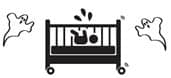

Öcüüüü!
- Bana bak, çocuk doğdu, eve geldiniz ya, yedi gün bebeğin yanından sakın ayrılma. Ayrılırsan cinler gelir, bebeği götürür, yerine başka bebek getirirler, “değiştirme bebek” derler ona. Ne olduğunu anlamazsın.
- Doğumdan sonra 40 gün evden dışarı çıkmak yok.
- Çöplüklerin, mezarlıkların yanından geçersen al basması olursun. Şaftın kayar. Al basması olmak istemiyorsan kafana o kırmızı kurdeleden takman lazım. Bütün cinler çok korkar ondan, kurdeleyi gören geri kaçar.
- Bebeğe sarı giydir, sarı tülbent ört, bebek sarılık olmasın. Eldivenciğini çıkartınca bak bakalım elini yumruk mu yapıyor, açık mı tutuyor. Yumruk yapıyorsa eli sıkı olacak demektir, açık tutuyorsa eli açık biri olacak demektir.
- Beşikte bebek yokken sakın beşiği sallama, bebeğin karnı ağrır.
- Göbeği düşünce göbeği, cami avlusuna gömersen dindar, okul bahçesine gömersen tahsilli, evin bahçesine gömersen evine bağlı olur.
- Kırkı çıkmadan tırnağını kesersen ya hırsız olur ya arsız olur. Hangisini istersin?
- Bebek 20 günlük olduğunda, yarı kırkına girdi demektir. Bebeği yıkarken tepesinden aşağı 20 kaşık su dökeceksin.
- Kırkına giren bebeği tuzlaman lazım. Ciddi söylüyorum. Kol altlarına, eklem yerlerine tuz süreceksin, sonra yıkayacaksın. Kokmasın diye. Tuzlamazsan ömrü billah ter kokar. Bir de kim tuzlarsa onun sözünü dinler büyüdüğünde.
- Tuzlama işlemi bittiğinde bebeği yıkayacak, tepesinden aşağı 40 kaşık su dökeceksin. Kırklama işlemi bitti, hayırlı uğurlu olsun. Şimdi dışarı çıkabilirsiniz.
- Bir aile büyüğünün evine bebekle ilk kez ziyarete gittiğinde o yerden bir yumurta almayı ihmal etme. Âdettendir.
- Bebeğini ağzından öpersen çabuk konuşur, ayağının altından öpersen çabuk yürür. Dikkat et başka yerlerinden öpüp çocuğun olayını hızlandırma.
- Bebek emeklemeye başladı diyelim. Eğer bacaklarının arasından bakıyorsa, bebeği bırak, hemen ortalığı topla ve hazır olda bekle. Misafir gelecek demektir.
- Dişi mi çıktı? İlk kim gördü? İşte ona hediye vereceksin.
- Sonra diş buğdayı yapacaksın. Bu esnada bebeğin karşısına makas, kalem, Kuran, ayna, tarak koyacaksın. Bebek makasa uzanırsa terzi, kaleme uzanırsa alim, Kuran’a uzanırsa hoca, aynaya uzanırsa süslü, tarağa uzanırsa berber olacak demektir. Kariyer planlaması işte, ne sandın?
- Çocuğunu öyle çok güzel giydirme, nazar olur .Giydiriyorsan da mutlaka nazar boncuğu tak. Yalnız atletini, fanilasını, çıtçıtlı badisini mutlaka ters giydir. Nazara karşı bu birebir.
- Çocuk yerde oynarken, uzanırken, yatarken aman diyeyim üstünden atlama, maazallah boyu kısa olur.
- Bebeğin ağzına üflersen cana yakın olur, unutma. Bebeğe bakınca “çirkin” diye sev, bir de “tütütü” diye yüzüne tükür. Ayrıca bebeğin ağzına kim tükürürse bebek ona çekermiş, bunu da atlama. Sonra da bebek enfeksiyon kapıp hasta olsun di mi? Hihhh ağzımdan yel alsın, dilimi ısırdım, üç kere tahtaya vurdum, tövbe dedim oldu mu?
Dur hele dur. Millet boyuna konuşur. Sen, sana ne mantıklı, anlamlı geliyorsa onu yap. Gereksiz evhamdan olabildiğince uzak dur. Zaten bak bu inançların da kendi içinde çelişenleri var. Çocuğun iç çamaşırını ters giydir nazar olmasın, diyorlar. Sonra da amaaan kıyafetlerini ters giyme işin ters gider, diyorlar. İnanma yani. İnanma ama yine de bu çılgın batıl inançlar listesini aklında tut. Yıllar geçip babaanne-anneanne falan olduğunda elini beline koyup tek tek sayarsın hepsini…